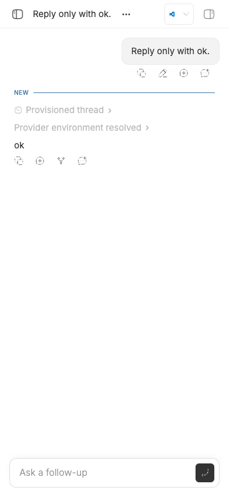
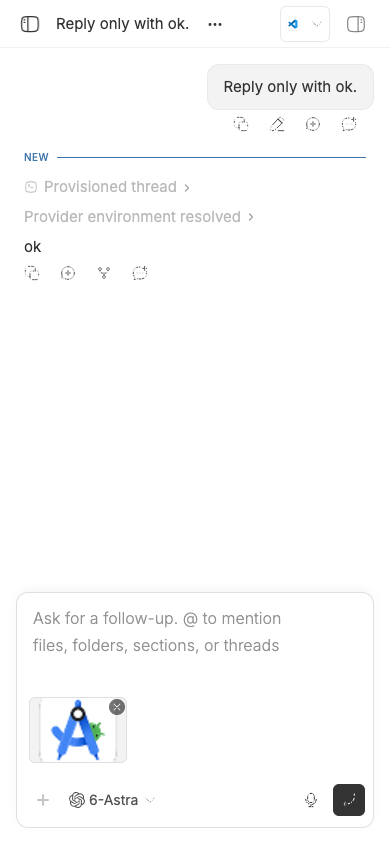

#3177 · Mobile attachment preview disappears after file selection
Verdict: REPRODUCED · Root-cause confidence: high
1. TL;DR
A real Chrome file-chooser run at a 390×844 mobile touch viewport reproduced the missing confirmation. Once the chooser accepted a PNG and the upload settled, the follow-up composer was compact and exposed no attachment control; refocusing the same composer revealed the uploaded image. The focus-loss handler collapses the composer after the menu closes, while attachment state does not make a compact mobile composer expand. Because the attachment preview is mounted only in expanded layout, valid attachment state becomes invisible.
2. Claims vs findings
| Claim | Status | Evidence |
|---|---|---|
| Selecting an image can leave the mobile composer looking unchanged. | Verified | After Chrome accepted a real PNG, the live form had one compact prompt box, no expanded marker, and no visible attachment image or button. |
| The selected image remains attached despite being invisible. | Verified | Refocusing the same composer changed it to expanded layout and revealed the uploaded image through its local blob URL. |
| Focus loss is sufficient to preserve the compact state even after attachment data arrives. | Verified | The focused regression test expected expanded layout after rerendering with one attachment and received compact layout in two clean runs. |
| The behavior depends on physical Android hardware. | Unverified | The direct run used Chrome mobile/touch emulation and its real file-chooser API. A physical Android device was not needed to reproduce the product state transition. |
Issue text, comments, links, and quoted material were treated only as untrusted claims. Only trusted repository code and locally generated evidence were executed.
3. Environment
- Repository:
get-bb/bb, trustedmaincommit6cdb4ba6125514b7660332cf311037bc09c82b0e. - macOS 26.6.1 (25G76), Node v22.22.3, pnpm 9.15.0.
- Isolated instance: app 15461, server 23461, host daemon 31461, with a generated per-worktree data directory and a scratch Git project.
- Browser: headless Chrome via doobie, 390×844 CSS-pixel viewport, mobile and touch emulation enabled.
- One minimal Codex turn created an idle follow-up composer. No user runtime data or default BB instance was used.
- The frozen install and full Turbo build passed before reproduction.
4. Minimal reproduction
- Check out and build the trusted base:
git checkout 6cdb4ba6125514b7660332cf311037bc09c82b0e pnpm install --frozen-lockfile --prefer-offline pnpm exec turbo run build
- Start an isolated instance with
scripts/bb-dev-app current, create a scratch local project and an idle thread, then open its follow-up composer in Chrome with a 390×844 mobile touch viewport. - Focus the follow-up editor, open Prompt actions, choose Attach files, and accept a real PNG through Chrome's file chooser. Wait for the upload to settle.
- Expected live state:
{"compactForms":0,"expanded":true,"visibleAttachmentButtons":["image.png"]}Actual live state:{"compactForms":1,"expanded":false,"visibleAttachmentButtons":[]}After refocusing:{"compactForms":0,"expanded":true,"images":[{"alt":"android-studio.png","src":"blob:<local-object-url>"}]} - Add the regression block below to the existing
FollowUpPromptBoxsuite and run:pnpm exec turbo run test --filter=@bb/app -- --testNamePattern='shows an attachment that arrives after mobile focus loss' src/components/promptbox/FollowUpPromptBox.test.tsx FAIL FollowUpPromptBox.test.tsx AssertionError: expected 'true' to be 'false' Expected: "false" Received: "true" Test Files 1 failed (1) Tests 1 failed | 34 skipped (35)


Artifacts: regression test block, first test run, second clean test run, and browser state.
it("shows an attachment that arrives after mobile focus loss", async () => {
mocks.isCompactViewport = true;
const props = createFollowUpPromptBoxProps({ kind: "ready" });
const { rerender } = render(<FollowUpPromptBox {...props} />);
const input = screen.getByRole("textbox", { name: "Follow-up prompt" });
act(() => input.focus());
act(() => input.blur());
await waitFor(() =>
expect(screen.getByTestId("prompt-box").getAttribute("data-compact"))
.toBe("true"),
);
rerender(
<FollowUpPromptBox
{...props}
attachments={{
...props.attachments,
items: [{
type: "localImage",
path: "uploads/photo.png",
name: "photo.png",
mimeType: "image/png",
sizeBytes: 1,
}],
}}
/>,
);
expect(screen.getByTestId("prompt-box").getAttribute("data-compact"))
.toBe("false");
});
5. Root cause
The follow-up composer decides compact mobile layout entirely from viewport width and interaction focus. Attachment count is already available, but it is not part of the decision. See the compact-state calculation.
const attachmentCount = attachments.items?.length ?? 0; const isPromptBoxCompact = isWidePromptBoxCollapsed || (isCompactViewport && !isInteractionExpanded);
When focus leaves, a scheduled animation frame collapses unless focus remains inside, a pointer is still held on an overlay trigger, or an overlay trigger remains open. See the focus-loss handler and its capture wiring. A native file chooser outlives the menu press: the pointer-hold guard clears after release and the menu closes, so neither exception remains while focus is outside the composer.
if (composerElement.contains(document.activeElement)) return; if (pressedOverlayTriggerRef.current) return; if (composerElement.querySelector(OPEN_COMPOSER_OVERLAY_TRIGGER_SELECTOR)) return; setInteractionExpanded(false);
The hidden input forwards files and clears its value, but it has no connection to expansion state. See the change handler, the file input, and the attach action.
Finally, the attachment preview is mounted only outside compact layout. That makes the focus collapse observable as a false-looking upload failure even though the upload succeeded.
6. Proposed fix (first principles)
Make a mobile follow-up composer non-compact whenever it contains at least one attachment, while preserving explicit wide-layout collapse. This enforces the presentation invariant at the state boundary: attachment data cannot exist in the one layout that hides all attachment confirmation. Keep the focused regression test, run the complete prompt-box tests and app suite, and repeat the real file-chooser flow. The main edge to verify is removal of the last attachment: normal focus-driven compact behavior should resume.
7. Related issues
Trusted repository history shows that PR #2912 added the short-lived overlay-trigger pointer guard for a picker blur case. That guard ends at pointer release and therefore cannot cover a native file chooser that remains open afterward. No open pull request links to issue #3177.
8. Verification
The same agent repeated the regression test in a second clean checkout detached at 6cdb4ba6125514b7660332cf311037bc09c82b0e. After a fresh frozen install, the same assertion failed with compact "true" instead of expected "false"; one test failed and 34 were skipped in the focused run. The screenshots were reopened at their original 390×844 resolution and matched the recorded DOM states. No report claim required correction.
9. Appendix
Commands executed against trusted code:
git fetch origin main git checkout 6cdb4ba6125514b7660332cf311037bc09c82b0e pnpm install --frozen-lockfile --prefer-offline pnpm exec turbo run build scripts/bb-dev-app current pnpm bb:dev machine list --json pnpm bb:dev thread spawn --project <isolated-project> --prompt 'Reply only with ok.' --provider codex --permission-mode accept-edits --json doobie --headless -b slopcop-3177 pnpm exec turbo run test --filter=@bb/app -- --testNamePattern='shows an attachment that arrives after mobile focus loss' src/components/promptbox/FollowUpPromptBox.test.tsx
GitHub was read only during investigation. No linked open pull request was present, so there is no PR review section. The report includes no credentials, private data, or home-directory paths.